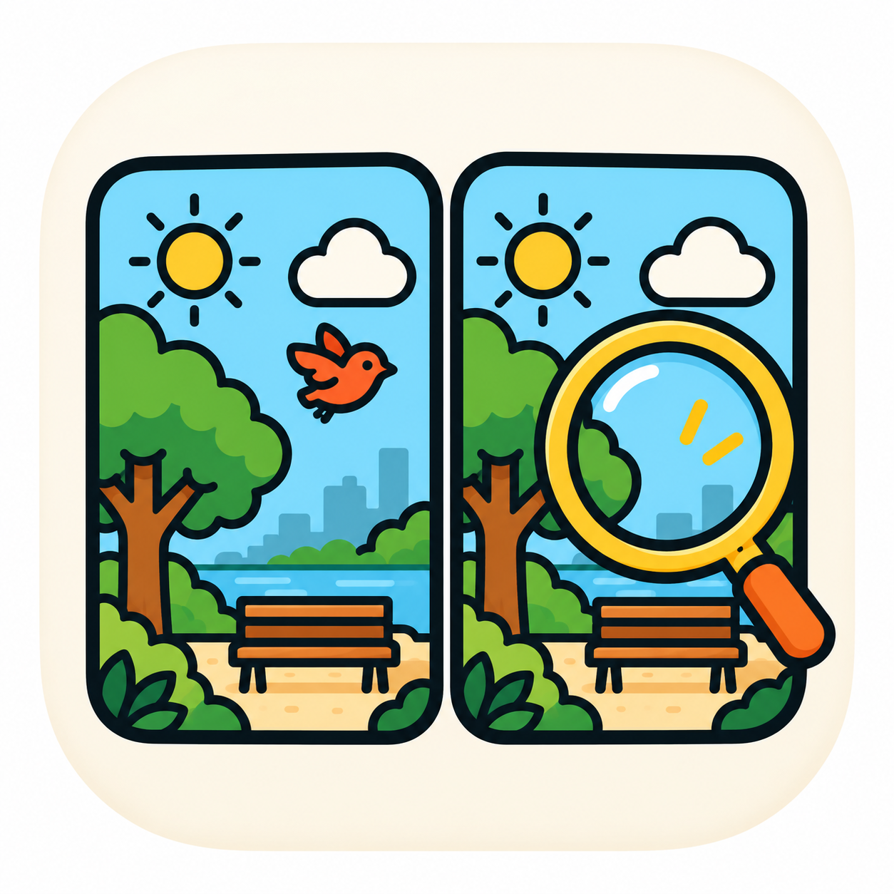

SameishSupport
Need help, found a bug, or have an idea? Email emaadnahed@gmail.com. We usually reply within two working days. Please include your phone model and what you were doing when the problem happened.
Common questions
When does the daily puzzle change?
At midnight in your own time zone. Everyone gets the same daily puzzle on the same date.
I missed a day. Is my streak gone?
Missing one day is covered automatically, at most once a week. After a longer break the streak simply starts again.
How do I restore a purchase on a new phone?
Open Settings and tap Restore purchases (or tap it on the Sameish Pro screen). Use the same Apple ID or Google account you bought with.
Can I play a daily puzzle I missed?
Yes: tap the calendar on the home screen. The last few days are free; older days unlock with a short video, or all of them with Sameish Pro.
How do I turn reminders on or off?
Settings > Reminders. You can also choose the time.
Is my progress backed up?
Progress is stored only on your device. Deleting the app deletes your progress.